R
library(tidyverse)In this episode, you will practice making honest, and beautiful, data visualisations using ggplot2 in RStudio. You will start with the R script you created in the previous episode.
tidyverseFirst, we will load the required package for this episode:
R
library(tidyverse)Loading tidyverse imports a collection of packages that work together very nicely. The most important ones are dplyr for data manipulation, and ggplot2 for data visualisation. The dplyr package makes common data-analysis tasks more consistent and readable. Central to the dplyr idea is that common operations are performed with descriptive functions (e.g. filter()), and that operations can be chained together with a pipe symbol: %>% (shortcut: control/command + shift + m). In a way, it’s similar to the command-line tricks we’ve seen before.
In the first four weeks of this course, you learned to manipulate data using the base R functions. In the Bioinformatics module, we will use dplyr to show you a different way of working with data. In the end, it’s up to you which route you like best.
We will work with the palmerpenguins dataset. This is a dataset describing 344 penguins. There are three different species, occuring on three different islands, and several parameters have been recorded.
If you want to know more about this dataset, see this nice slideshow.
Let’s have a look at the general properties of the dataset:
R
penguins <- read.csv('data/penguins.csv')
head(penguins)| species | island | bill_length_mm | bill_depth_mm | flipper_length_mm | body_mass_g | sex | year |
|---|---|---|---|---|---|---|---|
| Adelie | Torgersen | 39.1 | 18.7 | 181 | 3750 | male | 2007 |
| Adelie | Torgersen | 39.5 | 17.4 | 186 | 3800 | female | 2007 |
| Adelie | Torgersen | 40.3 | 18.0 | 195 | 3250 | female | 2007 |
| Adelie | Torgersen | NA | NA | NA | NA | NA | 2007 |
| Adelie | Torgersen | 36.7 | 19.3 | 193 | 3450 | female | 2007 |
| Adelie | Torgersen | 39.3 | 20.6 | 190 | 3650 | male | 2007 |
str(penguins)'data.frame': 344 obs. of 8 variables:
$ species : chr "Adelie" "Adelie" "Adelie" "Adelie" ...
$ island : chr "Torgersen" "Torgersen" "Torgersen" "Torgersen" ...
$ bill_length_mm : num 39.1 39.5 40.3 NA 36.7 39.3 38.9 39.2 34.1 42 ...
$ bill_depth_mm : num 18.7 17.4 18 NA 19.3 20.6 17.8 19.6 18.1 20.2 ...
$ flipper_length_mm: int 181 186 195 NA 193 190 181 195 193 190 ...
$ body_mass_g : int 3750 3800 3250 NA 3450 3650 3625 4675 3475 4250 ...
$ sex : chr "male" "female" "female" NA ...
$ year : int 2007 2007 2007 2007 2007 2007 2007 2007 2007 2007 ...Okay, the are 344 observations: each observation is one penguin. Of each penguin, categorical data is recorded as factors (species, island, sex) and some measurements of the bodies of the penguins (bill_len, bill_depth, flipper_len and body_mass) is recorded. Finally, we have the year in which the measurement was taken.
Let’s dive into some dplyr basics:
Filter all penguins that were recorded in the year 2007, or anything but the year 2007. Note that we’re using the dplyr pipe here: %>% (shortcut: control/command + shift + m). You can interpret %>% as and then: ‘we take dataset penguins and then filter for all observations in 2007’.
R
penguins %>% filter(year == 2007)
penguins %>% filter(year != 2007)If you want to store the results in a new data frame, you do it just like always in R:
R
penguins_2007 <- penguins %>% filter(year == 2007)If we want to filter for all Chinstrap and Gentoo penguins (but not Adelie penguins), we can use the following trick:
R
penguins %>% filter(species %in% c('Gentoo', "Chinstrap"))Now we learned how to filter observations (rows), but maybe we would want to select variables (columns). For example, we might want to work with a simpler dataset which just contains species, island, and flipper length:
R
penguins %>% select(species, island, flipper_length_mm)As you might have guessed, we can combine dplyr verbs together. Usually, we do this line by line to make the code more readable:
R
penguins %>%
filter(year == 2007) %>%
select(species, island)We can also create new variables using mutate():
R
penguins %>%
mutate(body_mass_kg = body_mass_g / 1000)Or similarly, combine two text variables together into one, separated by a -:
R
penguins %>%
mutate(species_island = paste(species, island, sep = "-"))This example may seem useless, but a similar step will be useful in the RNA-seq tutorial and assignment.
There’s much more you can do with dplyr, check out the dplyr cheatsheet (.pdf)
Which penguin species would be have the heighest body weight? Let’s visualise that. To make a bar plot, we first need to calculate the mean and standard error. In this case, we will use a very powerful part of dplyr: group_by() combined with summarize(). Here, we will group by species, and calculate the mean and standard deviation of the body_mass:
R
penguins_summary <- penguins %>%
group_by(species) %>%
summarize(mean = mean(body_mass_g, na.rm = TRUE),
se = sd(body_mass_g, na.rm = TRUE) / sqrt(n()))Let’s inspect the results:
R
head(penguins_summary)| species | mean | se |
|---|---|---|
| Adelie | 3700.662 | 37.19462 |
| Chinstrap | 3733.088 | 46.60747 |
| Gentoo | 5076.016 | 45.27097 |
Okay, looks like the Gentoo penguins have a much higher body mass than the other two species.
Let’s visualise the mean body mass using a ‘traditional’ barplot with error bars.
R
penguins_summary %>%
ggplot(aes(x = species, y = mean)) +
geom_col() +
geom_errorbar(aes(ymin = mean - se, ymax = mean + se), width = 0.2)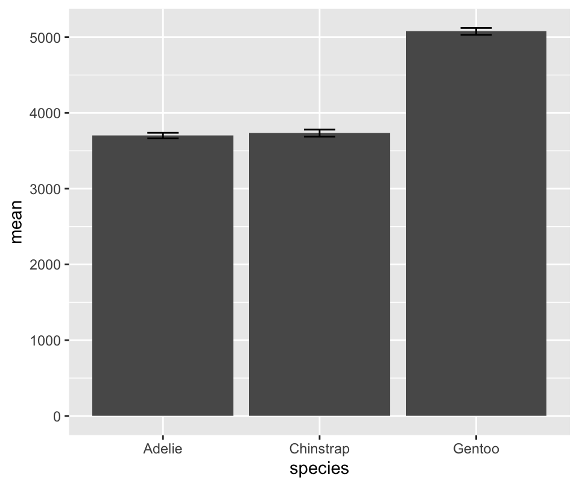
It does show what we just discovered, but it hides a lot. The standard error bars give some sort of idea of the spread of the data, but it looks suspicously small. That’s because the standard error decreases with increasing sample size n, and in this case we have quite some penguins! What does the spread really look like? A boxplot helps to solve this problem, at least partially:
R
penguins %>%
ggplot(aes(x = species, y = body_mass_g)) +
geom_boxplot()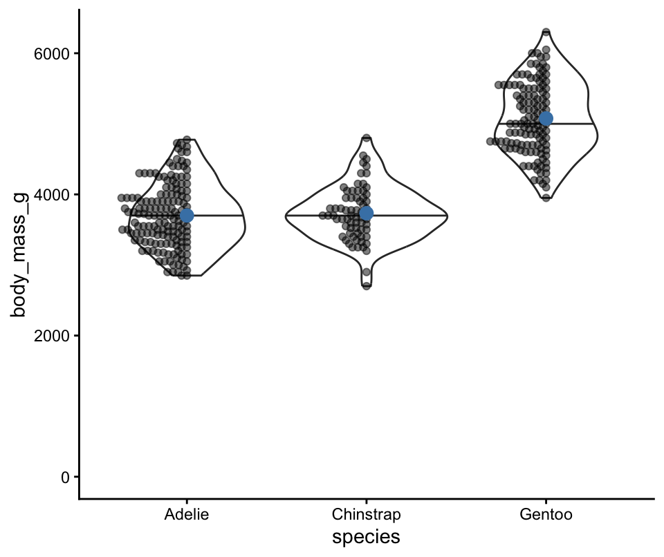
Instead of the mean, boxplots highlight the median value (thick line), the 25% and 75% percentile value (the box), and 1.5 * IQR (the lines) (where IQR is the inter-quartile range, or distance between the first and third quartiles). It’s better, but it still hides the actual data. Let’s add each individual datapoint. To do this, we use geom_jitter(). This function adds a little bit of noise on the x-axis direction.
R
penguins %>%
ggplot(aes(x = species, y = body_mass_g)) +
geom_boxplot() +
geom_jitter(width = 0.2, alpha = 0.5)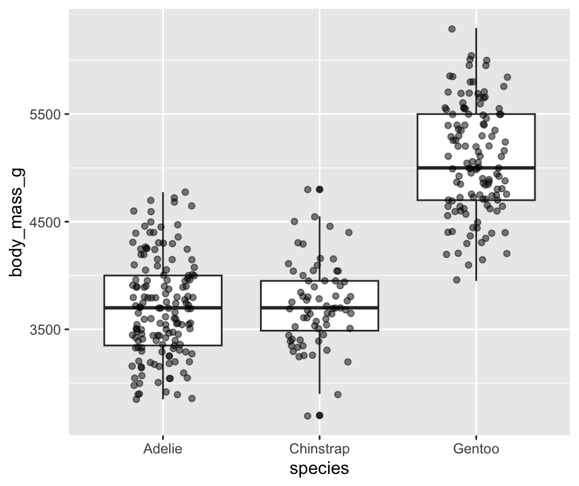
This is nice already! But we can let the shape that we’re plotting follow the distribution of the underlying datapoints rather than just plot boxes. The boxplots then become violin plots: simply change geom_boxplot() for geom_violin()
R
penguins %>%
ggplot(aes(x = species, y = body_mass_g)) +
geom_violin() +
geom_jitter(width = 0.2, alpha = 0.5)
This is an improvemen: we now see that the body weight distribution of Chinstrap penguins seems to be more narrow than the other two species. We can emphasize this more by letting the individual data points follow their distrution as well. To do that, we can change geom_jitter to geom_quasirandom, from the ggbeeswarm package. The combination of violin plot with individual datapoints that follow their distribution is called a sina plot.
R
library(ggbeeswarm)
penguins %>%
ggplot(aes(x = species, y = body_mass_g)) +
geom_violin() +
geom_quasirandom(alpha = 0.5, width = 0.2)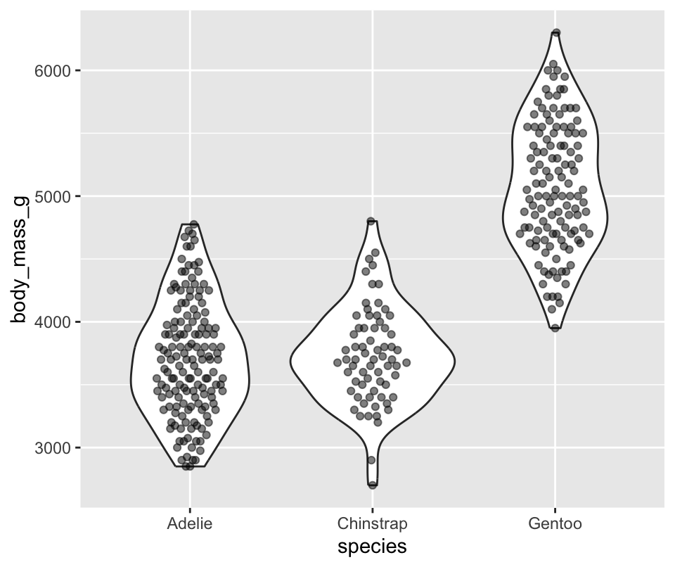
This is starting to become an honest, information dense plot. However, the default choice of y-axis range exaggerates the difference in body mass between Gentoo penguins and the other species. We can update this by setting the limits of the y axis.
R
penguins %>%
ggplot(aes(x = species, y = body_mass_g)) +
geom_violin() +
geom_quasirandom(alpha = 0.5, width = 0.2) +
scale_y_continuous(limits = c(0, NA))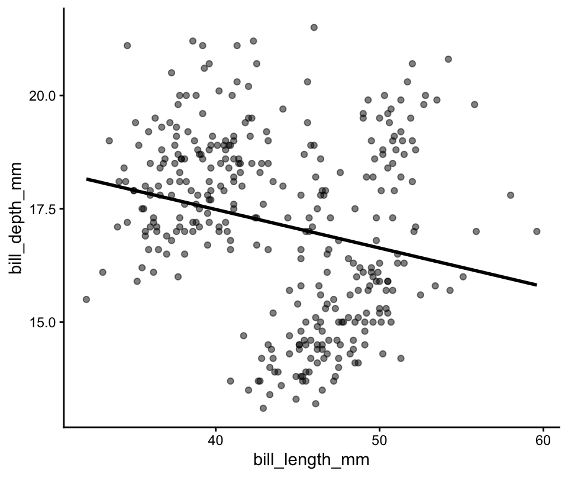
Let’s think about Tufte’s data visualisation principles for a moment. If we’re really strict; we can say that for each species, the distribution of the data points is drawn twice. Once in the ‘left’ direction, and once in the ‘right’ direction. We can change this by moving from geom_quasirandom() to geom_beeswarm() with the side = -1 argument
penguins %>%
ggplot(aes(x = species, y = body_mass_g)) +
geom_violin() +
geom_beeswarm(side = -1, alpha = 0.5) +
scale_y_continuous(limits = c(0, NA))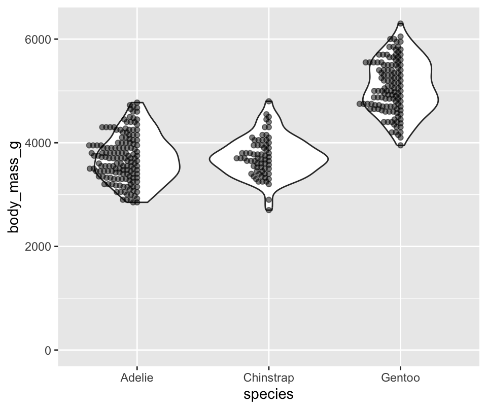
We will now add just a bit more information to the plot:
geom_violin() argument draw_quantiles = 0.5p <- penguins %>%
ggplot(aes(x = species, y = body_mass_g)) +
geom_violin(draw_quantiles = 0.5) +
geom_beeswarm(side = -1, alpha = 0.5) +
scale_y_continuous(limits = c(0, NA)) +
stat_summary(fun = mean, geom = "point", size = 3, colour = "steelblue", alpha = 1)
p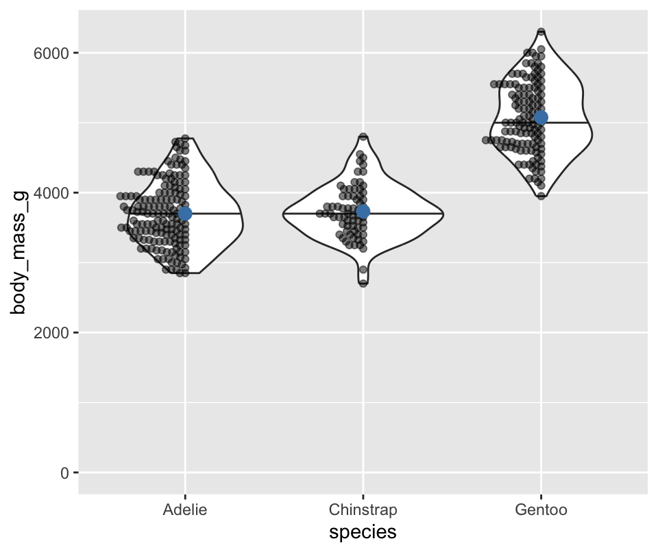
Nice! Also notice how we save the plot to a variable p this time. That way we can add styling options to the plot by adding to the p variable. Let’s now work a bit on the aestethics of the plot. To achieve a higher data-to-ink ratio, we remove the grey background and all grid lines. This is easy to do by just adding one of the default themes of R:
If you want to easily style your plots like famous newspapers (like wall street journal), see the ggthemes package.
R
p +
theme_classic() 
Okay, maybe this is a bit too minimal for my taste; I want the major y-axis gridlines back.
R
p +
theme_classic() +
theme(
panel.grid.major.y = element_line(linewidth = 0.3, colour = "grey70")
)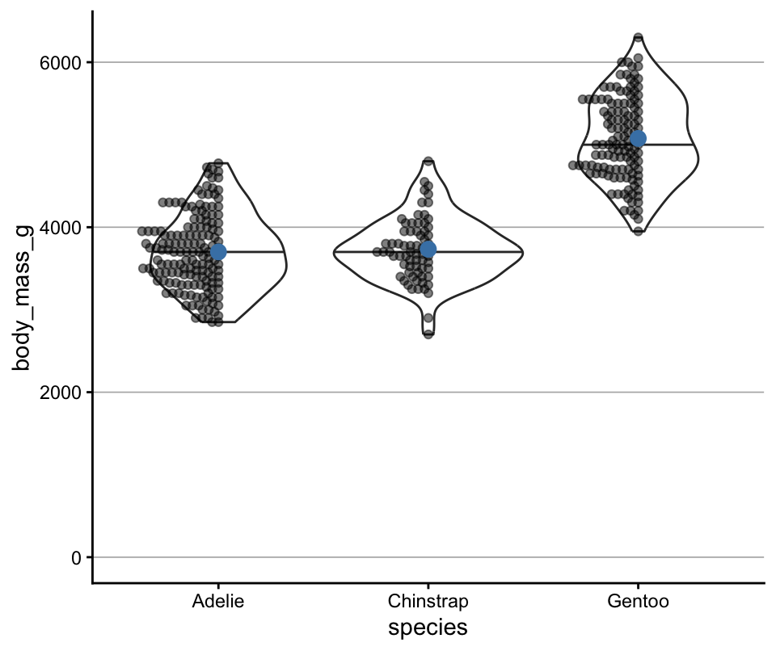
Finally; let’s update the axis labels:
R
p2 <- p +
theme_classic() +
theme(
panel.grid.major.y = element_line(linewidth = 0.3, colour = "grey70")) +
labs(
x = "Penguin species",
y = "Body mass (grams)")
p2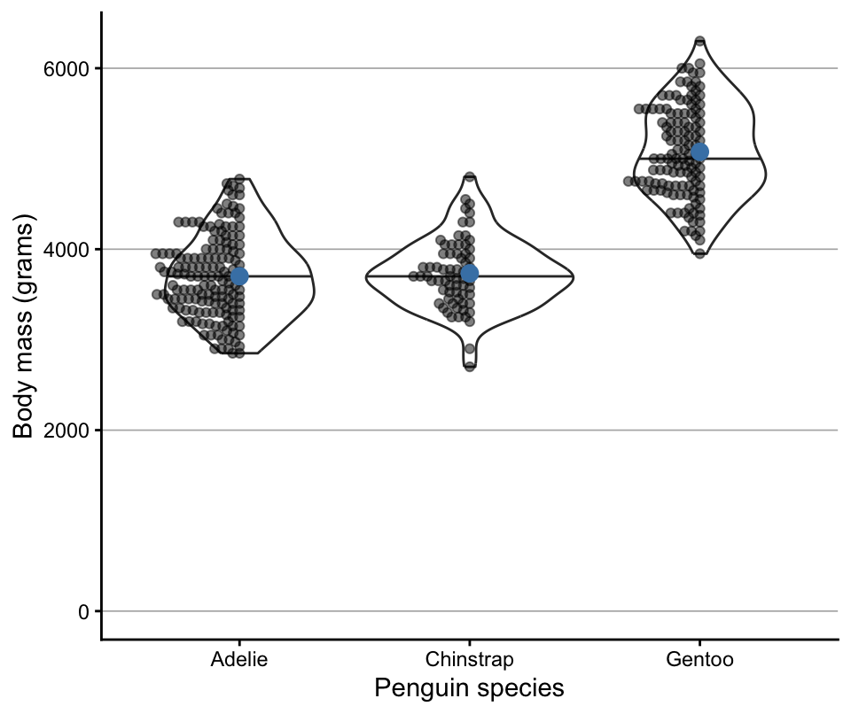
Finally, we can save the plot as .png (for presentations) and as .pdf (to make small adjustments to the plot in software like Illustrator or Inkscape, if necessary).
R
ggsave('results/body_mass_plot.png', p2, width = 5, height = 4, units = "in", create.dir = TRUE)
ggsave('results/body_mass_plot.pdf', p2, width = 5, height = 4, units = "in", create.dir = TRUE)Now, we will demonstrate the power of small multiples. Say we’re interested in the relationshop between bill length and bill depth. We can visualize this with a scatter plot. We add a regression line via geom_smooth().
R
penguins %>%
ggplot(aes(x = bill_length_mm, y = bill_depth_mm)) +
geom_point(alpha = 0.5) +
geom_smooth(method = "lm", colour = "black", se = FALSE) +
theme_classic()
Okay, so, the bill depth seems to be negatively correlated to the bill length! Let’s color the points by species, to inspect whether this correlation holds for all different species.
R
penguins %>%
ggplot(aes(x = bill_length_mm, y = bill_depth_mm, colour = species)) +
geom_point(alpha = 0.5) +
geom_smooth(method = "lm", se = FALSE) +
theme_classic()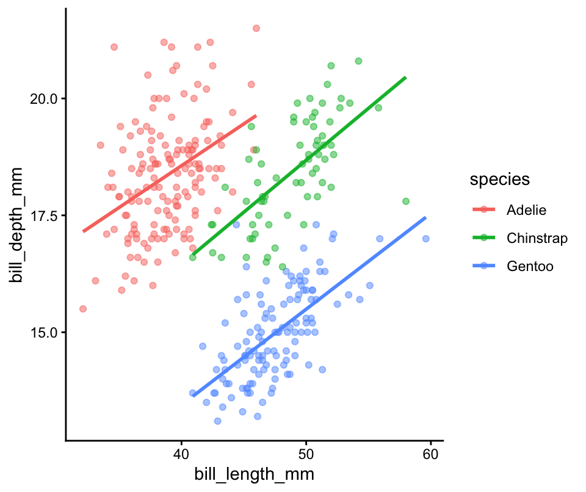
Woah! When looking per species; the negative correlation turned into a positive one. That’s an example of Simpson’s paradox: a phenomenon in data visualisation where a trend appears in aggregated groups of data, but disappears or even reverses when grouping information is taken into account. We can make this a bit more clear by using facets to separate the three species. In fact, we’re making small multiples now!
R
penguins %>%
ggplot(aes(x = bill_length_mm, y = bill_depth_mm)) +
geom_point(alpha = 0.5) +
geom_smooth(method = "lm", se = FALSE, color = 'black') +
facet_grid(~ species)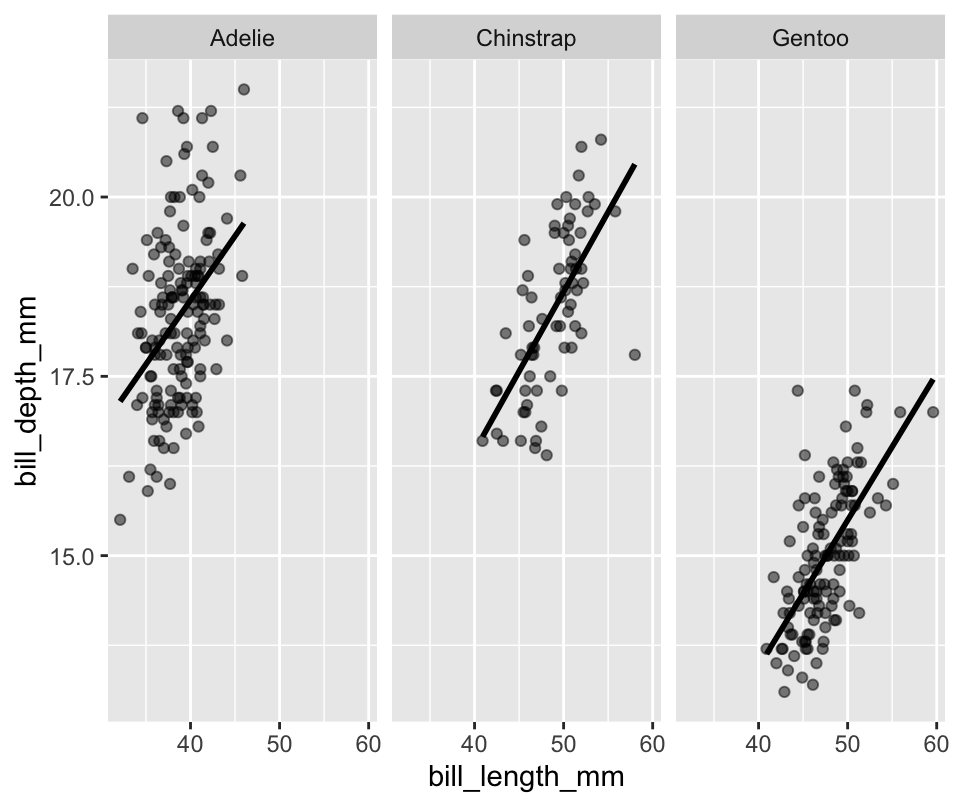
Remember that the penguins occured on three different islands? Let’s facet by island as well.
R
penguins %>%
ggplot(aes(x = bill_length_mm, y = bill_depth_mm)) +
geom_point(alpha = 0.5) +
geom_smooth(method = "lm", se = FALSE, colour = "black") +
facet_grid(island ~ species)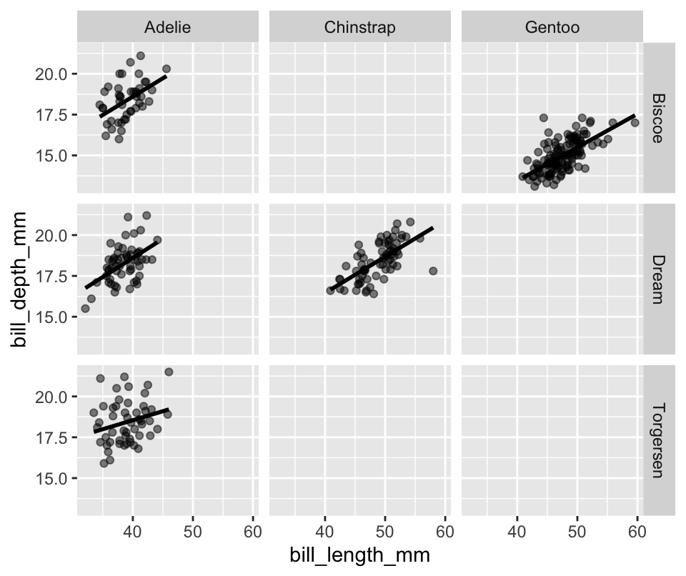
Interesting: apparently the Adelie penguins occur on all three islands, while Chinstrap and Gentoo penguins occur on just one island. We could have found out about this in other ways, ofcourse.
Finally; the sex of the penguins was also recorded. We can add that information with color. That will give us a super detailed picture of the penguins dataset, split across three dimensions:
R
penguins %>%
ggplot(aes(x = bill_length_mm, y = bill_depth_mm, colour = sex)) +
geom_point(alpha = 0.5) +
geom_smooth(method = "lm", se = FALSE) +
facet_grid(island ~ species)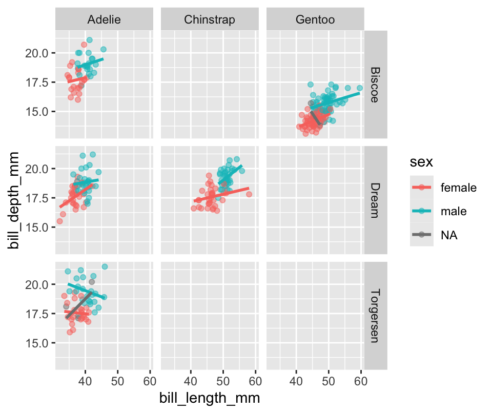
Apparently for some penguins the sex was not recorded; let’s remove them from the dataset before plotting:
R
p <- penguins %>%
filter(!is.na(sex)) %>%
ggplot(aes(x = bill_length_mm, y = bill_depth_mm, colour = sex)) +
geom_point(alpha = 0.5) +
geom_smooth(method = "lm", se = FALSE) +
facet_grid(island ~ species)
p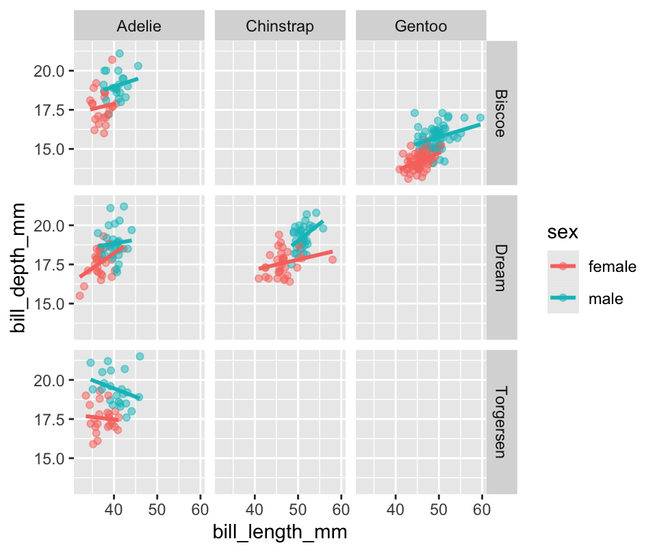
Good! In fact, there seems to be another Simpson’s paradox that’s revealed by splitting the dataset by island and sex. Can you find it?
Finally, let’s change the colors to a color-blind friendly palette and improve the aesthetics.
We’re taking the colors from a well-known color-blind friendly palette: the Okabe-Ito palette.
R
p2 <- p +
scale_colour_manual(values = c(
"female" = "#E69F00",
"male" = "#56B4E9"
)) +
theme_light() +
theme(
panel.grid.minor = element_blank(),
legend.position = "bottom") +
labs(
x = "Bill length (mm)",
y = "Bill depth (mm)"
)
p2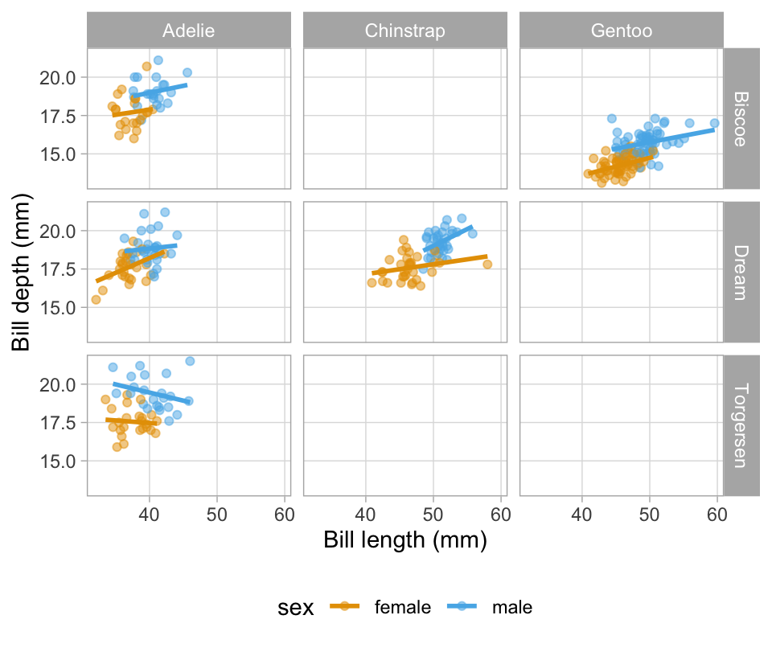
Nice! Finally, let’s save the plot.
R
ggsave('results/small_multiples.png', p2, width = 13, height = 14, units = "cm")Now, save your R script. Then, turn to your terminal in RStudio. We’re going to commit these changes to GitHub!
bash
1git status
git add .
git status
git commit -m "create scatter plot and sina plot"
git pushgit sees that you have changed and added files, but it not yet keeping track of them.
Alright, we’re ready for the assignment now.
You have learned what makes a good visualization. Now do the opposite: make the worst possible figure from the palmerpenguins dataset. Aim to commit as many ‘data visualisation sins’ as you can:
.png file.